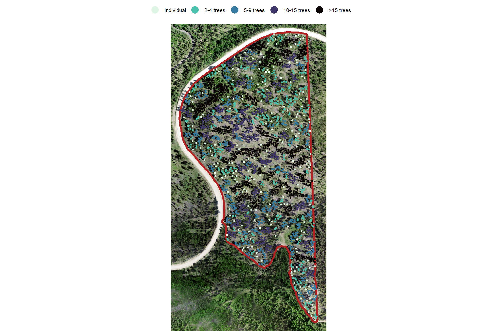
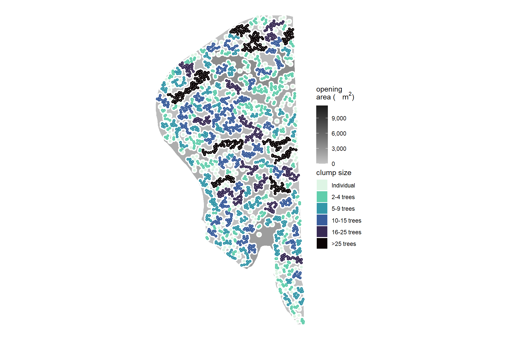
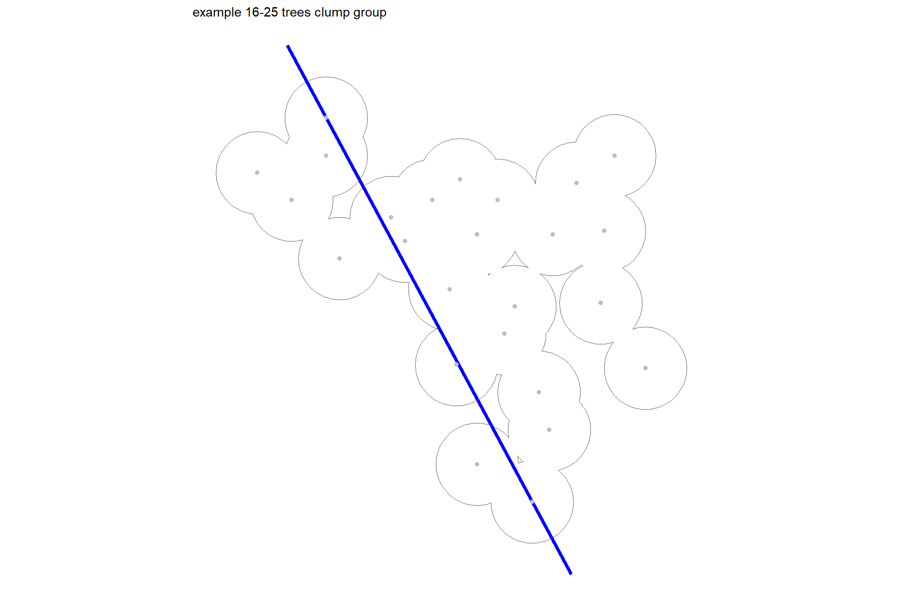

Section 9 UAS Tree Spatial Arrangement
9.1 Example Tree Group Workflow
For now we’ll just make a visual overview of the UAS-SfM forest inventory process to present at the 2024 National Silvicultural Workshop.
# focus on one harvest unit
my_suid = harvests$suid[6]
#########################
#########################
# what is overstory?
#########################
#########################
#!!!!! fill in one...if both filled in will use DBH
# determine overstory by height
ostory_ht_m = as.numeric(NA) # m = ft / 3.281
# determine overstory by diameter
ostory_dbh_cm = 5*2.54 # cm = in * 2.54
#########################
#########################
# clump spacing
#########################
#########################
# maximum distance between trees for determining tree clumps
# stems within 6 m of one another were considered to have the potential for developing interlocking crowns
tree_clump_dist_m = 6Check the stand location
# where is this
mapview::mapview(harvests %>% dplyr::filter(suid==my_suid), layer.name = "BHEF", label = FALSE, legend = FALSE, popup = FALSE)9.1.1 Orthomosaic from UAS
######################################################################################
# function to plot ortho + stand
######################################################################################
ortho_plt_fn = function(my_suid){
# convert to stars
ortho_st = ortho_rast %>%
terra::subset(subset = c(1,2,3)) %>%
terra::crop(
# stand %>%
harvests %>% dplyr::filter(suid==my_suid) %>%
sf::st_buffer(20) %>%
sf::st_bbox() %>%
sf::st_as_sfc() %>%
terra::vect()
) %>%
terra::aggregate(fact = 2, fun = "mean", na.rm = T) %>%
stars::st_as_stars()
# convert to rgb
ortho_rgb <- stars::st_rgb(
ortho_st[,,,1:3]
, dimension = 3
, use_alpha = FALSE
# , stretch = "histogram"
, probs = c(0.005, 0.995)
, stretch = "percent"
)
# ggplot
plt_rgb <- ggplot() +
stars::geom_stars(data = ortho_rgb[]) +
scale_fill_identity(na.value = "transparent") + # !!! don't take this out or RGB plot will kill your computer
scale_x_continuous(expand = c(0, 0)) +
scale_y_continuous(expand = c(0, 0)) +
labs(
x = ""
, y = ""
) +
theme_void()
# return(plt_rgb)
# combine all plot elements
plt_combine = plt_rgb +
geom_sf(
data = harvests %>% dplyr::filter(suid==my_suid)
, alpha = 0
, lwd = 1.5
, color = "#b22222"
) +
theme(
legend.position = "top" # c(0.5,1)
, legend.direction = "horizontal"
, legend.margin = margin(0,0,0,0)
, legend.text = element_text(size = 8)
, legend.title = element_text(size = 8)
, legend.key = element_rect(fill = "white")
# , plot.title = ggtext::element_markdown(size = 10, hjust = 0.5)
, plot.title = element_text(size = 10, hjust = 0.5, face = "bold")
, plot.subtitle = element_text(size = 8, hjust = 0.5, face = "italic")
)
return(plt_combine)
}
# PLOT IT
ortho_plt_fn(my_suid) +
labs(
subtitle = "\nstand boundary\n"
# subtitle = "<span style='color:#b22222;'><b><i>stand boundary</i></b></span>"
) +
theme(
plot.subtitle = element_text(size = 9.5, color = "#b22222", hjust = 0.5, face = "bold")
)# save it
ggplot2::ggsave("../data/NSW_01.jpeg", dpi = "print", height = 11, width = 5.8, device = "jpeg")plot with CHM
# chm
chm_temp = chm_rast %>%
terra::crop(
harvests %>% dplyr::filter(suid==my_suid) %>%
terra::vect()
) %>%
terra::mask(
harvests %>% dplyr::filter(suid==my_suid) %>%
terra::vect()
) %>%
terra::aggregate(fact = 2, fun = "mean", na.rm = T) %>%
`*`(3.28) %>% # transform to feet
as.data.frame(xy=T) %>%
rename(f=3)
# plot it
plt_chm_temp = ortho_plt_fn(my_suid) +
# chm
ggnewscale::new_scale_fill() +
geom_tile(
data = chm_temp
, mapping = aes(x = x, y = y, fill = f)
, na.rm = T
) +
scale_fill_viridis_c(option="plasma", alpha = 0.8, breaks = scales::extended_breaks(n=6), na.value = "transparent") +
labs(fill = "CHM (ft)")
# PLOT IT
plt_chm_temp
9.1.2 ITD
individual trees detected from lidR::locate_trees()
Height
plt_ttops_temp = ortho_plt_fn(my_suid) +
# treetops
geom_sf(
data = harvests_trees %>% dplyr::filter(suid==my_suid)
, mapping = aes(color = tree_height_ft)
, size = 1
) +
scale_color_viridis_c(option="plasma", alpha = 0.8, breaks = scales::extended_breaks(n=6)) +
labs(color = "Individual Tree\nHt. (ft)")
# PLOT IT
plt_ttops_temp
# save it
ggplot2::ggsave("../data/NSW_03.jpeg", dpi = "print", height = 11, width = 5.8, device = "jpeg")overstory/understory
plt_ttops_temp = ortho_plt_fn(my_suid) +
# treetops
geom_sf(
data = harvests_trees %>% dplyr::filter(suid==my_suid) %>%
dplyr::mutate(
ostory = dplyr::case_when(
!is.na(as.numeric(ostory_dbh_cm)) &
dbh_cm>=as.numeric(ostory_dbh_cm) ~ "overstory"
, !is.na(as.numeric(ostory_ht_m)) &
tree_height_m>=as.numeric(ostory_ht_m) ~ "overstory"
, is.na(as.numeric(ostory_dbh_cm)) &
is.na(as.numeric(ostory_ht_m)) &
dbh_cm>=5*2.54 ~ "overstory"
, T ~ "understory"
)
, ostory_sz = ifelse(ostory=="overstory",0.51,0.5)
)
, mapping = aes(color = ostory)
, size = 1
) +
scale_color_manual(values = c("navy","gray")) +
labs(color = "") +
theme(legend.key = element_rect(color = NA, fill = NA), legend.margin = margin(6.5,0,6.5,0)) +
guides(size = "none", color = guide_legend(override.aes = list(size = 5)))
# PLOT IT
plt_ttops_temp
9.1.3 Tree Groups
Identify tree groups using dbscan::dbscan() as outlined by Hanna et al. (2024):
To evaluate the ability of UAS-extracted trees to characterize horizontal and vertical heterogeneity tree arrangement, clusters of trees were identifed within the stem-mapped and UAS trees. A cluster of trees was defned as two or more trees with the potential for interlocking crowns. Overstory trees on the stem maps generally had a crown radius of ~3.0 m, so stems within 6 m of one another were considered to have the potential for developing interlocking crowns. Density-based spatial clustering of applications with noise (DBSCAN) from the fpr package (Hahsler et al., 2019) in R was used to assign trees to unique clusters, including individual trees that were assigned by themselves if they did not have the potential to develop interlocking crowns (>6 m from another tree). (p. 529)
To analyze the efect of tree aggregation on tree attributes, the identifed trees and clusters were designated as an “individual” or as a cluster consisting of 2-4, 5-9, 10-15, and >15 trees. We then calculated the number of clusters, the percent of stand basal area, the height coefcient of variation, and the canopy area within the cluster size classes for each site. (p. 529-530)
With repect to clump size groupings, Churchill et al. (2016) note that:
Proportions for clump sizes should be lumped into four or five bins for operational simplicity. We use 4 or 5 bins (Fig 5): individual trees, small clumps (2-4 trees), medium clumps (5-9 trees), and large clumps (10-20+ trees). Note that when instructed to leave a large clump (e.g. 10-20 trees), marking crews often have difficulty leaving the upper end of the size range (e.g. an 18, 19, or 20 tree clump). Thus adding a fifth bin for “super clumps” may be necessary (e.g. 15-20 trees or 20-25+ trees), especially if the upper size range of clumps is desired. (p. 12-13)
# filter trees spatially based on unit id
ttops_temp = harvests_trees %>% dplyr::filter(suid==my_suid) %>%
dplyr::mutate(
ostory = dplyr::case_when(
!is.na(as.numeric(ostory_dbh_cm)) &
dbh_cm>=as.numeric(ostory_dbh_cm) ~ "overstory"
, !is.na(as.numeric(ostory_ht_m)) &
tree_height_m>=as.numeric(ostory_ht_m) ~ "overstory"
, is.na(as.numeric(ostory_dbh_cm)) &
is.na(as.numeric(ostory_ht_m)) &
dbh_cm>=5*2.54 ~ "overstory"
, T ~ "understory"
)
) %>%
dplyr::filter(ostory=="overstory") %>%
dplyr::mutate(
X = sf::st_coordinates(.)[,1] %>% as.numeric()
, Y = sf::st_coordinates(.)[,2] %>% as.numeric()
)
#############################################################################
##### Identify clusters in each stem map plot #####
#############################################################################
### Place trees into clusters using an inter-tree distance of 6 m
my_dbscan_temp = ttops_temp %>%
sf::st_drop_geometry() %>%
dplyr::select(X,Y) %>%
dbscan::dbscan(eps = tree_clump_dist_m, minPts = 2)
# my_dbscan_temp %>% str()
### append cluster ID to trees
ttops_temp$dbscan_cluster = my_dbscan_temp$cluster
# ttops_temp$cluster %>% summary()
# ttops_temp %>% sf::st_drop_geometry() %>% dplyr::count(cluster) %>% dplyr::arrange(desc(n)) %>% dplyr::slice_head(n=11)
### cluster metrics
ttops_temp = ttops_temp %>%
dplyr::group_by(dbscan_cluster) %>%
dplyr::mutate(
# unique dbscan_cluster for individuals
clump_id = dplyr::case_when(
dbscan_cluster == 0 ~ max(my_dbscan_temp$cluster)+dplyr::row_number()
, T ~ dbscan_cluster
) %>%
factor()
) %>%
dplyr::group_by(clump_id) %>%
dplyr::mutate(
dbscan_cluster = factor(dbscan_cluster)
, clump_n_trees = dplyr::n()
, clump_n_trees_grp = cut(
clump_n_trees
,breaks = c(0,1,4,9,15,Inf)
, labels = c("Individual","2-4 trees","5-9 trees","10-15 trees",">15 trees")
) %>%
factor(
ordered = T
, levels = c("Individual","2-4 trees","5-9 trees","10-15 trees",">15 trees")
)
) %>%
dplyr::ungroup()
# what?
ttops_temp %>% dplyr::glimpse()## Rows: 2,127
## Columns: 61
## $ suid <chr> "0203088082660001000", "0203088082660001000"…
## $ forest_commonname <chr> "Black Hills National Forest", "Black Hills …
## $ admin_region_code <chr> "02", "02", "02", "02", "02", "02", "02", "0…
## $ activity_name <chr> "Single-tree Selection Cut", "Single-tree Se…
## $ treatment_type <chr> "Single-tree selectio", "Single-tree selecti…
## $ treatment_type_grp <chr> "Single-tree/Group Selection Cut", "Single-t…
## $ date_compl <date> 2021-06-01, 2021-06-01, 2021-06-01, 2021-06…
## $ year_id <dbl> 2021, 2021, 2021, 2021, 2021, 2021, 2021, 20…
## $ stand_area_m2 <dbl> 122161.5, 122161.5, 122161.5, 122161.5, 1221…
## $ stand_area_ha <dbl> 12.21615, 12.21615, 12.21615, 12.21615, 12.2…
## $ treeID <chr> "14552_610693.9_4889086.6", "14644_610749.4_…
## $ tree_height_m <dbl> 13.338, 8.104, 7.523, 7.951, 10.099, 9.421, …
## $ crown_area_m2 <dbl> 14.4375, 11.4375, 9.9375, 20.8750, 9.1250, 1…
## $ comp_trees_per_ha <dbl> 254.7643, 127.3822, 254.7643, 382.1465, 127.…
## $ comp_relative_tree_height <dbl> 100.00000, 100.00000, 100.00000, 66.28595, 1…
## $ comp_dist_to_nearest_m <dbl> 4.527693, 6.932712, 4.123106, 3.783186, 6.93…
## $ mean_crown_ht_m <dbl> 10.416134, 4.533062, 4.840354, 4.106737, 8.0…
## $ median_crown_ht_m <dbl> 10.855000, 5.097000, 4.936000, 4.018000, 8.3…
## $ min_crown_ht_m <dbl> 4.504333, 1.371000, 1.392000, 1.372000, 4.98…
## $ reg_est_dbh_cm <dbl> 24.04701, 13.06371, 11.95876, 12.85215, 17.0…
## $ reg_est_lower_dbh_cm <dbl> 14.904274, 8.132362, 7.403700, 7.957194, 10.…
## $ reg_est_upper_dbh_cm <dbl> 35.00581, 19.03814, 17.25921, 18.71577, 24.8…
## $ is_training_data <lgl> FALSE, FALSE, FALSE, FALSE, FALSE, FALSE, FA…
## $ dbh_cm <dbl> 27.50447, 15.34147, 13.83560, 14.98598, 19.8…
## $ dbh_m <dbl> 0.2750447, 0.1534147, 0.1383560, 0.1498598, …
## $ radius_m <dbl> 0.13752235, 0.07670735, 0.06917798, 0.074929…
## $ basal_area_m2 <dbl> 0.05941504, 0.01848519, 0.01503438, 0.017638…
## $ mod_lin_est_dbh_cm <dbl> 27.50447, 15.34147, 13.83560, 14.98598, 19.8…
## $ mod_quad_est_dbh_cm <dbl> 27.13737, 16.97538, 16.07883, 16.87526, 20.5…
## $ mod_quad_noint_est_dbh_cm <dbl> 26.711050, 10.407174, 9.084500, 10.207819, 1…
## $ mod_pwr_est_dbh_cm <dbl> 27.13839, 16.50052, 15.35595, 16.36752, 20.2…
## $ mod_weib_est_dbh_cm <dbl> 27.81448, 13.66057, 12.12752, 13.38625, 18.9…
## $ mod_rf_est_dbh_cm <dbl> 28.24706, 26.12541, 21.28572, 21.98804, 21.3…
## $ reg_est_dbh_in <dbl> 9.474521, 5.147103, 4.711751, 5.063749, 6.70…
## $ reg_est_lower_dbh_in <dbl> 5.872284, 3.204150, 2.917058, 3.135134, 4.12…
## $ reg_est_upper_dbh_in <dbl> 13.792290, 7.501026, 6.800127, 7.374013, 9.7…
## $ dbh_in <dbl> 10.836761, 6.044539, 5.451225, 5.904478, 7.8…
## $ mod_lin_est_dbh_in <dbl> 10.836761, 6.044539, 5.451225, 5.904478, 7.8…
## $ mod_quad_est_dbh_in <dbl> 10.692125, 6.688298, 6.335061, 6.648853, 8.0…
## $ mod_quad_noint_est_dbh_in <dbl> 10.524154, 4.100426, 3.579293, 4.021881, 6.1…
## $ mod_pwr_est_dbh_in <dbl> 10.692524, 6.501204, 6.050245, 6.448803, 7.9…
## $ mod_weib_est_dbh_in <dbl> 10.958905, 5.382264, 4.778244, 5.274181, 7.4…
## $ mod_rf_est_dbh_in <dbl> 11.129343, 10.293411, 8.386573, 8.663287, 8.…
## $ tree_height_ft <dbl> 43.74864, 26.58112, 24.67544, 26.07928, 33.1…
## $ comp_dist_to_nearest_ft <dbl> 14.850832, 22.739296, 13.523786, 12.408852, …
## $ mean_crown_ht_ft <dbl> 34.16492, 14.86844, 15.87636, 13.47010, 26.4…
## $ median_crown_ht_ft <dbl> 35.60440, 16.71816, 16.19008, 13.17904, 27.4…
## $ min_crown_ht_ft <dbl> 14.77421, 4.49688, 4.56576, 4.50016, 16.3606…
## $ dbh_ft <dbl> 0.9021466, 0.5032002, 0.4538076, 0.4915403, …
## $ radius_ft <dbl> 0.4510733, 0.2516001, 0.2269038, 0.2457701, …
## $ comp_trees_per_ac <dbl> 103.17954, 51.58977, 103.17954, 154.76931, 5…
## $ crown_area_ft2 <dbl> 155.40525, 123.11325, 106.96725, 224.69850, …
## $ basal_area_ft2 <dbl> 0.6395435, 0.1989745, 0.1618301, 0.1898603, …
## $ geom <POINT [m]> POINT (610693.9 4889087), POINT (61074…
## $ ostory <chr> "overstory", "overstory", "overstory", "over…
## $ X <dbl> 610693.9, 610749.4, 610720.1, 610706.1, 6107…
## $ Y <dbl> 4889087, 4889085, 4889085, 4889084, 4889082,…
## $ dbscan_cluster <fct> 0, 0, 0, 1, 0, 0, 1, 2, 3, 0, 3, 0, 0, 0, 2,…
## $ clump_id <fct> 268, 269, 270, 1, 271, 272, 1, 2, 3, 273, 3,…
## $ clump_n_trees <int> 1, 1, 1, 2, 1, 1, 2, 3, 20, 1, 20, 1, 1, 1, …
## $ clump_n_trees_grp <ord> Individual, Individual, Individual, 2-4 tree…plot overstory tree clumps
plt_grps_temp = ortho_plt_fn(my_suid) +
# treetops
geom_sf(
data = ttops_temp
, mapping = aes(color = dbscan_cluster)
, size = 1
) +
scale_color_manual(values = c(
"white"
, # get random list of colors from viridis and avoid whites
c(
viridis::turbo(length(unique(ttops_temp$dbscan_cluster))/2 %>% round())
, viridis::plasma(length(unique(ttops_temp$dbscan_cluster))/2 %>% round(), end = 0.95)
, viridis::viridis(length(unique(ttops_temp$dbscan_cluster))/2 %>% round(), end = 0.9)
, viridis::cividis(length(unique(ttops_temp$dbscan_cluster))/2 %>% round(), end = 0.9)
) %>%
sample() %>%
.[1:length(unique(ttops_temp$dbscan_cluster))-1]
)
) +
# scale_color_viridis_d("turbo") +
labs(subtitle = "\n overstory tree groups\n(individual trees in white)") +
theme(
legend.position = "none"
, plot.subtitle = element_text(size = 9.5, hjust = 0.5, face = "bold")
)
# PLOT IT
plt_grps_temp
# save it
ggplot2::ggsave("../data/NSW_05.jpeg", dpi = "print", height = 11, width = 5.8, device = "jpeg")and plot overstory tree clumps by number of trees
plt_grps_temp = ortho_plt_fn(my_suid) +
# treetops
geom_sf(
data = ttops_temp
, mapping = aes(color = clump_n_trees_grp)
, size = 1
) +
scale_color_viridis_d(option="mako", direction = -1) +
labs(color = "") +
theme(legend.key = element_rect(color = NA, fill = NA), legend.margin = margin(6.5,0,6.5,0)) +
guides(size = "none", color = guide_legend(override.aes = list(size = 5)))
# PLOT IT
plt_grps_temp
9.1.4 Within Clump Distance
Determine nearest neighbor distance for the stand and within clusters. Some combination of these metrics has been used to describe relative aggregation. (source?)
Calculate the distance to the nearest tree within each clump
ttops_temp =
ttops_temp %>%
dplyr::group_by(clump_id) %>%
tidyr::nest() %>%
dplyr::mutate(
distance_clump_nn_m = purrr::map(data, function(x){
# get index of nearest neighbor
i = sf::st_nearest_feature(x)
# get dist
d = sf::st_distance(x, x[i,], by_element=TRUE) %>% as.numeric()
return(d)
})
) %>%
tidyr::unnest(cols = c(data, distance_clump_nn_m)) %>%
sf::st_set_geometry("geom") %>% # set it cuz it got lost
dplyr::ungroup()
# ggplot() + geom_point(aes(x=X,y=Y,color = distance_clump_nn_m)) + theme_light()plot it
ortho_plt_fn(my_suid) +
# treetops
geom_sf(
data = ttops_temp
, mapping = aes(color = distance_clump_nn_m)
, size = 1
) +
scale_color_viridis_c(option="viridis", na.value = "white") +
labs(color = "within clump\nN.N. dist. (m)")9.1.4.1 Create function to get tree list with clumps
# create function to pass a unit id and return list of trees with clump groupings
get_tree_clumps = function(
my_suid
, tree_clump_dist_m=6
, ostory_ht_m = as.numeric(NA)
, ostory_dbh_cm = as.numeric(NA)
){
# check ostory definition
if(is.na(as.numeric(ostory_dbh_cm)) & is.na(as.numeric(ostory_ht_m))){
warning("`ostory_dbh_cm` and `ostory_ht_m` are not set...using `ostory_dbh_cm` = 12.7")
ostory_dbh_cm = 5*2.54
# filter data
ttops_temp = harvests_trees %>%
dplyr::filter(
suid==my_suid
& dbh_cm>=as.numeric(ostory_dbh_cm)
)
}else if(!is.na(as.numeric(ostory_dbh_cm))){
# filter data
ttops_temp = harvests_trees %>%
dplyr::filter(
suid==my_suid
& dbh_cm>=as.numeric(ostory_dbh_cm)
)
}else{
# filter data
ttops_temp = harvests_trees %>%
dplyr::filter(
suid==my_suid
& tree_height_m>=as.numeric(ostory_ht_m)
)
}
# calcs
ttops_temp = ttops_temp %>%
dplyr::mutate(
X = sf::st_coordinates(.)[,1] %>% as.numeric()
, Y = sf::st_coordinates(.)[,2] %>% as.numeric()
)
#############################################################################
##### Identify clusters in each stem map plot #####
#############################################################################
### Place trees into clusters using an inter-tree distance of 6 m
my_dbscan_temp = ttops_temp %>%
sf::st_drop_geometry() %>%
dplyr::select(X,Y) %>%
dbscan::dbscan(eps = tree_clump_dist_m, minPts = 2)
# my_dbscan_temp %>% str()
### append cluster ID to trees
ttops_temp$dbscan_cluster = my_dbscan_temp$cluster
# ttops_temp$cluster %>% summary()
# ttops_temp %>% sf::st_drop_geometry() %>% dplyr::count(cluster) %>% dplyr::arrange(desc(n)) %>% dplyr::slice_head(n=11)
### cluster metrics
ttops_temp = ttops_temp %>%
dplyr::group_by(dbscan_cluster) %>%
dplyr::mutate(
# unique dbscan_cluster for individuals
clump_id = dplyr::case_when(
dbscan_cluster == 0 ~ max(my_dbscan_temp$cluster)+dplyr::row_number()
, T ~ dbscan_cluster
) %>%
factor()
) %>%
dplyr::group_by(clump_id) %>%
dplyr::mutate(
dbscan_cluster = factor(dbscan_cluster)
, clump_n_trees = dplyr::n()
, clump_n_trees_grp = cut(
clump_n_trees
,breaks = c(0,1,4,9,15,Inf)
, labels = c("Individual","2-4 trees","5-9 trees","10-15 trees",">15 trees")
) %>%
factor(
ordered = T
, levels = c("Individual","2-4 trees","5-9 trees","10-15 trees",">15 trees")
)
) %>%
dplyr::ungroup()
# add distance to nearest within clump
ttops_temp =
ttops_temp %>%
dplyr::group_by(clump_id) %>%
tidyr::nest() %>%
dplyr::mutate(
distance_clump_nn_m = purrr::map(data, function(x){
# get index of nearest neighbor
i = sf::st_nearest_feature(x)
# get dist
d = sf::st_distance(x, x[i,], by_element=TRUE) %>% as.numeric()
return(d)
})
) %>%
tidyr::unnest(cols = c(data, distance_clump_nn_m)) %>%
sf::st_set_geometry("geom") %>% # set it cuz it got lost
dplyr::ungroup() %>%
dplyr::mutate(
tree_clump_dist_m = tree_clump_dist_m
# , ostory_ht_m = ifelse(is.na(ostory_ht_m), as.numeric(NA), as.numeric(ostory_ht_m))
# , ostory_dbh_cm = ifelse(is.na(ostory_dbh_cm), as.numeric(NA), as.numeric(ostory_dbh_cm))
)
# return
return(ttops_temp)
}
# call it
ttops_temp = get_tree_clumps(
my_suid = my_suid
, tree_clump_dist_m = tree_clump_dist_m
, ostory_dbh_cm = ostory_dbh_cm
)9.1.5 Clump Polygons and Metrics
Churchill et al. (2016) provide instructions for implementing the clump identification (Plotkin et al. 2002) in ArcGIS:
Use the Buffer tool (in the Proximity toolset within the Analysis toolbox) to create a buffer of distance d/2, one half the inter-tree distance, around each point. This quantity d/2 is meant to approximate the crown radius of a “typical” overstory tree. Set the Dissolve Type option to ALL, which dissolves overlapping buffers, creating a reduced set of spatially non-overlapping polygons stored as a multipart polygon feature…Sanchez Meador et al. (2011) provide some useful examples of how clump attributes can be summarized…The method described here can be modified to use measured or modeled crown radii for each tree in place of d/2 (p.36)
# create function to pass a return from get_tree_clumps() and create clump polygons with summary stats
get_clump_summary = function(dta){
# get tree_clump_dist_m
tree_clump_dist_m = min(dta$tree_clump_dist_m, na.rm = T)
# create clump polys and summary
clump_polys_temp =
dta %>%
dplyr::ungroup() %>%
sf::st_set_geometry("geometry") %>%
sf::st_buffer(tree_clump_dist_m/2) %>%
dplyr::group_by(suid, clump_id, dbscan_cluster, clump_n_trees_grp) %>%
dplyr::summarise(
# union buffered tree points
geometry = sf::st_union(geometry)
# summary metrics
, n_trees = dplyr::n_distinct(treeID)
, mean_dbh_cm = mean(dbh_cm, na.rm = T)
, mean_tree_height_m = mean(tree_height_m, na.rm = T)
, loreys_height_m = sum(basal_area_m2*tree_height_m, na.rm = T) / sum(basal_area_m2, na.rm = T)
, basal_area_m2 = sum(basal_area_m2, na.rm = T)
, sum_dbh_cm_sq = sum(dbh_cm^2, na.rm = T)
) %>%
dplyr::ungroup() %>%
sf::st_make_valid() %>%
dplyr::mutate(
clump_area_ha = sf::st_area(geometry) %>% as.numeric() %>% `/`(10000)
, trees_per_ha = (n_trees/clump_area_ha)
, basal_area_m2_per_ha = (basal_area_m2/clump_area_ha)
, pct_stand_basal_area = basal_area_m2/sum(basal_area_m2)
, pct_stand_n_trees = n_trees/sum(n_trees)
, qmd_cm = sqrt(sum_dbh_cm_sq/n_trees)
) %>%
dplyr::select(-c(sum_dbh_cm_sq)) %>%
# convert to imperial units
calc_imperial_units_fn() %>%
dplyr::mutate(tree_clump_dist_m = tree_clump_dist_m)
# calculate distance between clumps
clump_polys_temp = clump_polys_temp %>%
dplyr::mutate(
nearest = sf::st_nearest_feature(clump_polys_temp)
, distance_nearest_clump_m = sf::st_distance(
clump_polys_temp
, clump_polys_temp[nearest,]
, by_element=TRUE
) %>%
as.numeric()
) %>%
dplyr::select(-c(nearest))
# return
return(clump_polys_temp)
}
# get it
# get_clump_summary(
# dta = get_tree_clumps(my_suid = my_suid, tree_clump_dist_m = tree_clump_dist_m)
# )
clump_polys_temp = get_clump_summary(ttops_temp)
# what?
clump_polys_temp %>% dplyr::glimpse()## Rows: 464
## Columns: 26
## $ suid <chr> "0203088082660001000", "0203088082660001000",…
## $ clump_id <fct> 268, 269, 270, 271, 272, 273, 274, 275, 276, …
## $ dbscan_cluster <fct> 0, 0, 0, 0, 0, 0, 0, 0, 0, 0, 0, 0, 0, 0, 0, …
## $ clump_n_trees_grp <ord> Individual, Individual, Individual, Individua…
## $ geometry <POLYGON [m]> POLYGON ((610696.9 4889087,..., POLYG…
## $ n_trees <int> 1, 1, 1, 1, 1, 1, 1, 1, 1, 1, 1, 1, 1, 1, 1, …
## $ mean_dbh_cm <dbl> 27.50447, 15.34147, 13.83560, 19.88595, 18.28…
## $ mean_tree_height_m <dbl> 13.338, 8.104, 7.523, 10.099, 9.421, 12.864, …
## $ loreys_height_m <dbl> 13.338, 8.104, 7.523, 10.099, 9.421, 12.864, …
## $ basal_area_m2 <dbl> 0.05941504, 0.01848519, 0.01503438, 0.0310586…
## $ clump_area_ha <dbl> 0.002826142, 0.002826142, 0.002826142, 0.0028…
## $ trees_per_ha <dbl> 353.8393, 353.8393, 353.8393, 353.8393, 353.8…
## $ basal_area_m2_per_ha <dbl> 21.023378, 6.540785, 5.319756, 10.989771, 9.2…
## $ pct_stand_basal_area <dbl> 0.0005454947, 0.0001697141, 0.0001380320, 0.0…
## $ pct_stand_n_trees <dbl> 0.0004701457, 0.0004701457, 0.0004701457, 0.0…
## $ qmd_cm <dbl> 27.50447, 15.34147, 13.83560, 19.88595, 18.28…
## $ mean_dbh_in <dbl> 10.836761, 6.044539, 5.451225, 7.835064, 7.20…
## $ qmd_in <dbl> 10.836761, 6.044539, 5.451225, 7.835064, 7.20…
## $ mean_tree_height_ft <dbl> 43.74864, 26.58112, 24.67544, 33.12472, 30.90…
## $ loreys_height_ft <dbl> 43.74864, 26.58112, 24.67544, 33.12472, 30.90…
## $ basal_area_ft2_per_ac <dbl> 91.64090, 28.51128, 23.18882, 47.90441, 40.50…
## $ trees_per_ac <dbl> 143.3049, 143.3049, 143.3049, 143.3049, 143.3…
## $ clump_area_ac <dbl> 0.006983396, 0.006983396, 0.006983396, 0.0069…
## $ basal_area_ft2 <dbl> 0.6395435, 0.1989745, 0.1618301, 0.3343153, 0…
## $ tree_clump_dist_m <dbl> 6, 6, 6, 6, 6, 6, 6, 6, 6, 6, 6, 6, 6, 6, 6, …
## $ distance_nearest_clump_m <dbl> 0.021675089, 0.934747368, 4.205774953, 0.9347…# do these numbers match
identical(
# clump polys
nrow(clump_polys_temp)
# clumps in tree list data
, ttops_temp %>% dplyr::distinct(clump_id) %>% nrow()
)## [1] TRUEplot it
ortho_plt_fn(my_suid) +
# clumps
ggnewscale::new_scale_fill() +
geom_sf(
data = clump_polys_temp
, mapping = aes(fill = dbscan_cluster)
, color = NA, alpha = 0.9
) +
scale_fill_manual(values = c(
"white"
, # get random list of colors from viridis and avoid whites
c(
viridis::turbo(length(unique(ttops_temp$dbscan_cluster))/2 %>% round())
, viridis::plasma(length(unique(ttops_temp$dbscan_cluster))/2 %>% round(), end = 0.95)
, viridis::viridis(length(unique(ttops_temp$dbscan_cluster))/2 %>% round(), end = 0.9)
, viridis::cividis(length(unique(ttops_temp$dbscan_cluster))/2 %>% round(), end = 0.9)
) %>%
sample() %>%
.[1:length(unique(ttops_temp$dbscan_cluster))-1]
)
) +
labs(subtitle = "\n overstory tree group polygons\n(individual trees in white)") +
theme(
legend.position = "none"
, plot.subtitle = element_text(size = 9.5, hjust = 0.5, face = "bold")
)
check the distance between clumps
ortho_plt_fn(my_suid) +
ggnewscale::new_scale_fill() +
geom_sf(
data = clump_polys_temp
, mapping = aes(fill = distance_nearest_clump_m)
, size = 1, color = NA
) +
scale_fill_viridis_c(option="viridis", na.value = "white") +
labs(fill = "nearest clump\ndist. (m)")
9.1.6 Clump Spacing
See Churchill et al. (2016) Figure 4 (p.10) and Matonis and Binkley (2018) who “calculated coverage of mosaic-meadows (percentage of stand > 6 m from overstory trees)” (p. 124)
Since we already buffered the tree points to approximate the crown radius, we’ll continue to use our \(d/2\) where \(d\) is maximum distance between trees for determining tree clumps and is meant to approximate the crown radius of a “typical” overstory tree
# create function to pass a return from get_clump_summary() and get a distance raster
get_clump_dist_rast = function(dta){
# get tree_clump_dist_m
tree_clump_dist_m = min(dta$tree_clump_dist_m, na.rm = T)
# suid
my_suid = dta$suid[1]
# rasterize the clump polygons and then calculate distance between clumps as raster
dist_rast =
terra::rasterize(
x = clump_polys_temp %>% terra::vect()
, y = clump_polys_temp %>%
terra::vect() %>%
terra::rast(res = 0.2)
) %>%
terra::distance() %>%
# crop it to stand extent
terra::crop(
harvests %>% dplyr::filter(suid==my_suid) %>%
terra::vect()
) %>%
terra::mask(
harvests %>% dplyr::filter(suid==my_suid) %>%
terra::vect()
)
######### part 2
# now create openings vector data
openings_vect =
dist_rast %>%
terra::classify(rcl = c(tree_clump_dist_m/2,Inf), others = NA, include.lowest = T) %>%
terra::as.polygons(na.rm = T) %>%
sf::st_as_sf() %>%
sf::st_cast("POLYGON") %>%
dplyr::mutate(layer = dplyr::row_number()) %>%
dplyr::mutate(
openining_area_m2 = sf::st_area(geometry) %>% as.numeric()
, suid = my_suid
, tree_clump_dist_m = tree_clump_dist_m
)
# return
return(list(dist_rast = dist_rast, openings_vect = openings_vect))
}
# get it
dist_rast_temp = get_clump_dist_rast(clump_polys_temp)
dist_rast_temp## $dist_rast
## class : SpatRaster
## dimensions : 3259, 1565, 1 (nrow, ncol, nlyr)
## resolution : 0.2, 0.2 (x, y)
## extent : 610479.1, 610792.1, 4888438, 4889090 (xmin, xmax, ymin, ymax)
## coord. ref. : NAD83 / UTM zone 13N (EPSG:26913)
## source(s) : memory
## name : layer
## min value : 0.00000
## max value : 19.20521
##
## $openings_vect
## Simple feature collection with 286 features and 4 fields
## Geometry type: POLYGON
## Dimension: XY
## Bounding box: xmin: 610479.1 ymin: 4888438 xmax: 610791.5 ymax: 4889090
## Projected CRS: NAD83 / UTM zone 13N
## First 10 features:
## layer geometry openining_area_m2 suid
## 1 1 POLYGON ((610700.9 4889089,... 6.60 0203088082660001000
## 1.1 2 POLYGON ((610684.7 4889085,... 0.04 0203088082660001000
## 1.2 3 POLYGON ((610707.9 4889090,... 18.20 0203088082660001000
## 1.3 4 POLYGON ((610697.3 4889082,... 0.56 0203088082660001000
## 1.4 5 POLYGON ((610724.1 4889090,... 114.52 0203088082660001000
## 1.5 6 POLYGON ((610717.1 4889080,... 14.48 0203088082660001000
## 1.6 7 POLYGON ((610702.9 4889075,... 0.04 0203088082660001000
## 1.7 8 POLYGON ((610684.3 4889085,... 124.72 0203088082660001000
## 1.8 9 POLYGON ((610702.1 4889072,... 2.76 0203088082660001000
## 1.9 10 POLYGON ((610753.5 4889090,... 167.40 0203088082660001000
## tree_clump_dist_m
## 1 6
## 1.1 6
## 1.2 6
## 1.3 6
## 1.4 6
## 1.5 6
## 1.6 6
## 1.7 6
## 1.8 6
## 1.9 6plot the distance raster and openings vector data we just got with overlaid tree clumps and tree points
plt_fnl_temp =
ggplot() +
# distance
geom_tile(
data = dist_rast_temp$dist_rast %>% terra::aggregate(2, cores = 4) %>% as.data.frame(xy = T) %>% rename(f=3)
, mapping = aes(x=x, y=y, fill = f)
) +
scale_fill_distiller(
palette = "YlOrRd"
, na.value = "transparent"
, direction = 1
, name = "distance to\nnearest tree (m)"
) +
# openings
geom_sf(data = dist_rast_temp$openings_vect, mapping = aes(color = openining_area_m2), fill = NA) +
scale_color_gradient(
low = "gray77", high = "gray11"
, labels = scales::comma_format(accuracy = 1)
, name = latex2exp::TeX("opening\narea ($\\m^2$)")
) +
# clumps
ggnewscale::new_scale_fill() +
geom_sf(
data = clump_polys_temp
, mapping = aes(fill = clump_n_trees_grp)
, color = NA
) +
scale_fill_viridis_d(option="mako", direction = -1, name = "clump size") +
# tree points
geom_sf(data = ttops_temp, color = "gray88", shape = ".") +
theme_void()## |---------|---------|---------|---------|========================================= 
# save it
ggplot2::ggsave("../data/NSW_07.jpeg", dpi = "print", height = 11, width = 5.8, device = "jpeg")highlight the openings
plt_open_temp =
ggplot() +
# clumps
geom_sf(
data = clump_polys_temp
, mapping = aes(fill = clump_n_trees_grp)
, color = NA
) +
scale_fill_viridis_d(option="mako", direction = -1, name = "clump size") +
# openings
ggnewscale::new_scale_fill() +
geom_sf(data = dist_rast_temp$openings_vect, mapping = aes(fill = openining_area_m2), color = NA) +
scale_fill_gradient(
low = "gray77", high = "gray11"
, labels = scales::comma_format(accuracy = 1)
, name = latex2exp::TeX("opening\narea ($\\m^2$)")
) +
# tree points
geom_sf(data = ttops_temp, color = "gray88", shape = ".") +
theme_void()
plt_open_temp
# save it
ggplot2::ggsave("../data/NSW_08.jpeg", dpi = "print", height = 11, width = 5.8, device = "jpeg")combine them?

9.1.7 Clump Metrics
create a function to summarize by number of tree clump grouping variable
# create a function to summarize by number of tree clump grouping
get_clump_n_trees_grp_summary = function(trees, clumps){
# get area of harvest unit
#...will use this area in the area calculations such that...
#...TPA = trees in a certain group size across the whole stand area
harvest_area_m2 = harvests %>%
dplyr::filter(suid == trees$suid[1]) %>%
dplyr::pull(harvest_area_m2) %>%
.[1]
# collapse and calculate silv metrics
dta = trees %>%
sf::st_drop_geometry() %>%
dplyr::group_by(suid,stand_area_ha,clump_n_trees_grp) %>%
dplyr::summarise(
# summary metrics
n_trees = dplyr::n_distinct(treeID)
, mean_dbh_cm = mean(dbh_cm, na.rm = T)
, mean_tree_height_m = mean(tree_height_m, na.rm = T)
, loreys_height_m = sum(basal_area_m2*tree_height_m, na.rm = T) / sum(basal_area_m2, na.rm = T)
, basal_area_m2 = sum(basal_area_m2, na.rm = T)
, sum_dbh_cm_sq = sum(dbh_cm^2, na.rm = T)
) %>%
dplyr::ungroup() %>%
# attach clump area
dplyr::left_join(
clumps %>%
sf::st_drop_geometry() %>%
dplyr::group_by(suid,clump_n_trees_grp) %>%
dplyr::summarise(clump_area_ha = sum(clump_area_ha), stand_n_clumps = dplyr::n())
) %>%
dplyr::mutate(
trees_per_ha = (n_trees/clump_area_ha) # (n_trees/stand_area_ha) ... this was not right
, basal_area_m2_per_ha = (basal_area_m2/clump_area_ha) # (basal_area_m2/stand_area_ha) ... this was not right
, qmd_cm = sqrt(sum_dbh_cm_sq/n_trees)
# stand calcs
, stand_trees_per_ha = sum(n_trees)/stand_area_ha
, stand_basal_area_m2 = sum(basal_area_m2)
, stand_basal_area_m2_per_ha = sum(basal_area_m2)/stand_area_ha
, pct_stand_basal_area = basal_area_m2/stand_basal_area_m2
, pct_stand_n_trees = n_trees/sum(n_trees)
, stand_qmd_cm = sqrt(sum(trees$dbh_cm^2, na.rm = T)/sum(n_trees))
) %>%
dplyr::select(-c(sum_dbh_cm_sq)) %>%
# convert to imperial units
calc_imperial_units_fn()
# return
return(dta)
}
# call it
clump_n_trees_grp_summary_temp = get_clump_n_trees_grp_summary(
trees = get_tree_clumps(my_suid = my_suid, tree_clump_dist_m = tree_clump_dist_m, ostory_dbh_cm = ostory_dbh_cm)
, clumps = get_clump_summary(
get_tree_clumps(my_suid = my_suid, tree_clump_dist_m = tree_clump_dist_m, ostory_dbh_cm = ostory_dbh_cm)
)
)
# what?
clump_n_trees_grp_summary_temp %>% dplyr::glimpse()## Rows: 5
## Columns: 32
## $ suid <chr> "0203088082660001000", "020308808266000100…
## $ stand_area_ha <dbl> 12.21615, 12.21615, 12.21615, 12.21615, 12…
## $ clump_n_trees_grp <ord> Individual, 2-4 trees, 5-9 trees, 10-15 tr…
## $ n_trees <int> 197, 373, 453, 458, 646
## $ mean_dbh_cm <dbl> 24.54975, 26.50844, 25.02626, 24.58050, 22…
## $ mean_tree_height_m <dbl> 12.02114, 12.83492, 12.22318, 12.06302, 11…
## $ loreys_height_m <dbl> 14.89275, 15.16326, 13.82049, 13.59407, 12…
## $ basal_area_m2 <dbl> 10.68584, 22.97003, 24.11641, 23.36206, 27…
## $ clump_area_ha <dbl> 0.5567499, 0.9128247, 1.0464888, 1.0144267…
## $ stand_n_clumps <int> 197, 138, 67, 38, 24
## $ trees_per_ha <dbl> 353.8393, 408.6217, 432.8761, 451.4865, 47…
## $ basal_area_m2_per_ha <dbl> 19.19325, 25.16368, 23.04507, 23.02981, 20…
## $ qmd_cm <dbl> 26.28006, 28.00151, 26.03528, 25.48460, 23…
## $ stand_trees_per_ha <dbl> 174.1138, 174.1138, 174.1138, 174.1138, 17…
## $ stand_basal_area_m2 <dbl> 108.9196, 108.9196, 108.9196, 108.9196, 10…
## $ stand_basal_area_m2_per_ha <dbl> 8.916034, 8.916034, 8.916034, 8.916034, 8.…
## $ pct_stand_basal_area <dbl> 0.09810762, 0.21088982, 0.22141482, 0.2144…
## $ pct_stand_n_trees <dbl> 0.09261871, 0.17536436, 0.21297602, 0.2153…
## $ stand_qmd_cm <dbl> 25.53432, 25.53432, 25.53432, 25.53432, 25…
## $ mean_dbh_in <dbl> 9.672602, 10.444324, 9.860346, 9.684717, 8…
## $ qmd_in <dbl> 10.354342, 11.032594, 10.257901, 10.040934…
## $ stand_qmd_in <dbl> 10.06052, 10.06052, 10.06052, 10.06052, 10…
## $ mean_tree_height_ft <dbl> 39.42935, 42.09854, 40.09203, 39.56671, 36…
## $ loreys_height_ft <dbl> 48.84821, 49.73548, 45.33121, 44.58855, 41…
## $ basal_area_ft2_per_ac <dbl> 83.66338, 109.68849, 100.45346, 100.38696,…
## $ stand_basal_area_ft2_per_ac <dbl> 38.86499, 38.86499, 38.86499, 38.86499, 38…
## $ trees_per_ac <dbl> 143.3049, 165.4918, 175.3148, 182.8520, 19…
## $ stand_trees_per_ac <dbl> 70.51611, 70.51611, 70.51611, 70.51611, 70…
## $ stand_area_ac <dbl> 30.1861, 30.1861, 30.1861, 30.1861, 30.1861
## $ clump_area_ac <dbl> 1.375729, 2.255590, 2.585874, 2.506648, 3.…
## $ basal_area_ft2 <dbl> 115.0224, 247.2494, 259.5890, 251.4692, 29…
## $ stand_basal_area_ft2 <dbl> 1172.41, 1172.41, 1172.41, 1172.41, 1172.41summary table
# table it
clump_n_trees_grp_summary_temp %>%
dplyr::select(
clump_n_trees_grp, n_trees
, mean_dbh_in
, qmd_in
, mean_tree_height_ft
, loreys_height_ft
, trees_per_ac
, basal_area_ft2_per_ac, pct_stand_basal_area, pct_stand_n_trees
) %>%
dplyr::mutate(
dplyr::across(
.cols = c(pct_stand_basal_area, pct_stand_n_trees)
, .fns = ~ scales::percent(.x, accuracy = 1)
)
) %>%
kableExtra::kbl(
digits = 1
, escape = F
, caption = paste0("Overstory tree clump summary<br>", "stand suid: ", clump_n_trees_grp_summary_temp$suid[1])
, col.names = c(
"", "trees"
, "mean<br>DBH (in)"
, "QMD (in)"
, "mean<br>Ht. (ft)"
, "Loreys<br>Ht. (ft)"
, "TPA"
, "BA<br>ft<sup>2</sup> ac<sup>-1</sup>"
, "%<br>stand BA"
, "%<br>stand trees"
)
) %>%
kableExtra::kable_styling()| trees |
mean DBH (in) |
QMD (in) |
mean Ht. (ft) |
Loreys Ht. (ft) |
TPA |
BA ft2 ac-1 |
% stand BA |
% stand trees |
|
|---|---|---|---|---|---|---|---|---|---|
| Individual | 197 | 9.7 | 10.4 | 39.4 | 48.8 | 143.3 | 83.7 | 10% | 9% |
| 2-4 trees | 373 | 10.4 | 11.0 | 42.1 | 49.7 | 165.5 | 109.7 | 21% | 18% |
| 5-9 trees | 453 | 9.9 | 10.3 | 40.1 | 45.3 | 175.3 | 100.5 | 22% | 21% |
| 10-15 trees | 458 | 9.7 | 10.0 | 39.6 | 44.6 | 182.9 | 100.4 | 21% | 22% |
| >15 trees | 646 | 8.9 | 9.2 | 36.8 | 41.1 | 192.7 | 89.2 | 26% | 30% |
plot it
clump_n_trees_grp_summary_temp %>%
dplyr::select(
clump_n_trees_grp, n_trees
, mean_dbh_in
, qmd_in
, mean_tree_height_ft
, loreys_height_ft
, trees_per_ac
, basal_area_ft2_per_ac, pct_stand_basal_area
) %>%
dplyr::mutate(pct_stand_basal_area = pct_stand_basal_area*100) %>%
tidyr::pivot_longer(
cols = -c(clump_n_trees_grp)
) %>%
dplyr::mutate(
metric = factor(
name
, ordered = T
, levels = c(
"n_trees"
, "mean_dbh_in"
, "qmd_in"
, "mean_tree_height_ft"
, "loreys_height_ft"
, "trees_per_ac"
, "basal_area_ft2_per_ac"
, "pct_stand_basal_area"
)
, labels = c(
latex2exp::TeX("Number of Trees", output = "character")
, latex2exp::TeX("Mean DBH (in)", output = "character")
, latex2exp::TeX("QMD (in)", output = "character")
, latex2exp::TeX("Mean Tree Height (ft)", output = "character")
, latex2exp::TeX("Lorey's Mean Height (ft)", output = "character")
, latex2exp::TeX("Trees $ac^{-1}$")
, latex2exp::TeX("Basal Area $ft^{2} \\cdot ac^{-1}$")
, latex2exp::TeX("% stand BA", output = "character")
)
)
, clump_n_trees_grp = forcats::fct_rev(clump_n_trees_grp)
) %>%
ggplot(mapping = aes(
x = value, y = clump_n_trees_grp
, fill = name, label = scales::number(value, accuracy = 0.1)
)
) +
geom_col(width = 0.7) +
geom_text(color = "black", size = 3.5, hjust = -0.1) +
facet_wrap(facets = vars(metric), ncol = 2, scales = "free_x", labeller = label_parsed) +
scale_fill_viridis_d(option = "cividis", alpha = 0.9) +
scale_x_continuous(expand = expansion(mult = c(0,0.1))) +
labs(
x = "", y = ""
, subtitle = paste0(
"Overstory tree clump summary\n"
, "stand suid: "
, clump_n_trees_grp_summary_temp$suid[1])
) +
theme_light() +
theme(
legend.position = "none"
, strip.text = element_text(color = "black", size = 10)
, strip.background = element_rect(fill = "gray88")
, axis.text.y = element_text(face = "bold")
, axis.ticks.y = element_blank()
, panel.grid.major.y = element_blank()
, panel.grid.minor.y = element_blank()
)
9.2 ICO Implementation
Churchill et al. (2016) describe the full process for implementing the ICO approach in The ICO Approach to Quantifying and Restoring Forest Spatial Pattern: Implementation Guide in which the authors lay out the prescription development process:
- Identify skips and other special treatment areas
- Consider the need for openings
- Determine the stand average density target
- Determine the appropriate distance to define clumps
- Obtain targets for clump proportions
- Select target clump proportions for your stand
- Generate clump targets for the whole unit
- Combine clump and opening targets with leave tree criteria into marking guidelines
The objective here is to: 1) provide the manager with the current conditions (completed above); 2) take the “targets” as set by the manager (steps 3, 5, 6, 7); 3) create the prescription with the leave tree marking.
Let’s implement this prescription development process with our UAS tree list
9.2.1 3. Determine the stand average density target
Step 3 in Churchill et al. (2016):
An average BA, TPA, or SDI target for the stand should be selected that is appropriate for the species, structure, site conditions, and management objectives. Expected mortality from prescribed fire should be factored in. Stand average targets can come from historical reference stands, plant association based stocking guides, density management tools, or a combination of both (see Franklin et al. (2013) for a full discussion of setting density targets). In dry forests, the number and size of old trees must be accounted in setting the density target. To use the ICO method, the target must be converted to TPA (see Table 1). A lower diameter cutoff also needs to be specified for the TPA target. This should be the lower limit in the contract or cutting guidelines given to the marking crew or contractor. (p.11)
this is what Table 1 looks like with TPA values are derived from the formula:
\[ TPA = \frac{BA}{QMD^{2} \times 0.005454} \]
# function to get tpa from ba and qmd
get_tpa = function(ba_ft2_ac, qmd_in){
tpa = round(ba_ft2_ac/((qmd_in^2)*0.005454))
return(tpa)
}
# table it
tidyr::crossing(
ba = seq(40,200,20)
, qmd = seq(8,20,2)
) %>%
dplyr::mutate(
tpa = get_tpa(ba,qmd)
) %>%
tidyr::pivot_wider(names_from = ba, values_from = tpa) %>%
dplyr::mutate(l = "QMD (in)") %>%
dplyr::relocate(l) %>%
kableExtra::kbl(
col.names = c(".","", seq(40,200,20))
, escape = F
, caption = "Basal Area and QMD to TPA conversion chart"
) %>%
kableExtra::add_header_above(
c("","", "Basal Area (ft2/ac)"=length(seq(40,200,20)))
) %>%
kableExtra::kable_styling() %>%
kableExtra::column_spec(1:2, bold = T) %>%
kableExtra::collapse_rows(columns = 1, valign = "middle")| . | 40 | 60 | 80 | 100 | 120 | 140 | 160 | 180 | 200 | |
|---|---|---|---|---|---|---|---|---|---|---|
| QMD (in) | 8 | 115 | 172 | 229 | 286 | 344 | 401 | 458 | 516 | 573 |
| 10 | 73 | 110 | 147 | 183 | 220 | 257 | 293 | 330 | 367 | |
| 12 | 51 | 76 | 102 | 127 | 153 | 178 | 204 | 229 | 255 | |
| 14 | 37 | 56 | 75 | 94 | 112 | 131 | 150 | 168 | 187 | |
| 16 | 29 | 43 | 57 | 72 | 86 | 100 | 115 | 129 | 143 | |
| 18 | 23 | 34 | 45 | 57 | 68 | 79 | 91 | 102 | 113 | |
| 20 | 18 | 28 | 37 | 46 | 55 | 64 | 73 | 83 | 92 |
9.2.1.1 Current Stand Conditions
For determining targets, the silviculturist needs to know the current conditions. Provide the current stand conditions based on the UAS tree list for the selected stand that are required to set the targets:
- Current BA
- Current QMD
- Current proportion of trees by clump size
clump_n_trees_grp_summary_temp %>%
dplyr::select(clump_n_trees_grp, pct_stand_n_trees) %>%
dplyr::mutate(
pct_stand_n_trees = scales::percent(pct_stand_n_trees,accuracy = 1)
) %>%
tidyr::pivot_wider(names_from = clump_n_trees_grp, values_from = pct_stand_n_trees) %>%
kableExtra::kable(
caption = paste0(
"Current stand BA (ft2/ac): "
, clump_n_trees_grp_summary_temp$stand_basal_area_ft2_per_ac[1] %>% scales::number(accuracy = 0.1)
, "<br>Current stand QMD (in): "
, clump_n_trees_grp_summary_temp$stand_qmd_in[1] %>% scales::number(accuracy = 0.1)
, "<br>Current stand TPA: "
, clump_n_trees_grp_summary_temp$stand_trees_per_ac[1] %>% scales::number(accuracy = 1)
)
, escape = F
, digits = 1
) %>%
kableExtra::kable_styling() %>%
kableExtra::footnote(general = "values are the percent of trees in each clump size")| Individual | 2-4 trees | 5-9 trees | 10-15 trees | >15 trees |
|---|---|---|---|---|
| 9% | 18% | 21% | 22% | 30% |
| Note: | ||||
| values are the percent of trees in each clump size |
9.2.2 5. Obtain targets for clump proportions
Step 5 in Churchill et al. (2016):
ICO prescriptions are based on a target proportion of trees in different sized clumps within a stand. Proportions are just the percentage of trees, or TPA, that are in different sized clumps. Basal area proportions can be used, but we have found TPA targets to be more straightforward to use. Ideally, a table summarizing clump proportions for a range of reference conditions in your area is available (Table 2). If not, instructions for developing one are provided in section VI. (p.12)
Section VI of Churchill et al. (2016) notes that
reference spatial information may already be available and summarized in a way that it can be directly incorporated into ICO prescriptions. Such data exist and have been published for areas in Arizona (Abella and Denton 2009, Sánchez Meador et al. 2011), the eastern Washington Cascades (Churchill et al. 2013), the northern Rockies (Larson et al. 2012), and the Sierra Nevada (Lydersen et al. 2013). Reference datasets for using ICO in other forest types, such as coastal Douglas-fir or Pacific silver fir, also exist (Larson and Churchill 2008). (p.28)
Table 2 is:

9.2.3 6. Select target clump proportions for your stand
Now set the desired BA, QMD, and proportion of trees in each clump size:
########################################################################################
########################################################################################
# desired BA, QMD, and proportion of trees in each clump size
########################################################################################
########################################################################################
# desired BA
target_ba = 37 # cannot be > current BA
# desired QMD
target_qmd = 11
# desired proportion (%) of trees in each clump size
# !cannot be create larger proportion of ">15 trees" clump as this would require adding trees...
# c("Individual", "2-4 trees", "5-9 trees", "10-15 trees", ">15 trees")
# c(.18, .33, .24, .10, .15)
target_pcts = c(.18, .33, .24, .10, .15)
########################################################################################
########################################################################################
# desired BA, QMD, and proportion of trees in each clump size
########################################################################################
########################################################################################Check set up and define data with targets
get_target_check_prescription = function(
clump_n_trees_grp_summary_dta
, target_ba = as.numeric(NA)
, target_qmd = as.numeric(NA)
, target_pcts = as.numeric(NA)
){
if(
is.na(target_ba) | is.na(target_qmd) | max(is.na(target_pcts))==1
){
stop("must set all of the function parameters:\n`target_ba`, `target_qmd`, and `target_pcts`")
}
#############################################
# check target BA and TPA
#############################################
if(as.numeric(target_ba)>clump_n_trees_grp_summary_dta$stand_basal_area_ft2_per_ac[1]){
stop(
"target BA in `target_ba` of "
, round(as.numeric(target_ba),1), " is greater than current BA of "
, clump_n_trees_grp_summary_dta$stand_basal_area_ft2_per_ac[1] %>% round(1)
)
}
if(
get_tpa(target_ba, target_qmd)>clump_n_trees_grp_summary_dta$stand_trees_per_ac[1]
){
stop(
"target TPA in of "
, round(as.numeric(get_tpa(target_ba, target_qmd)),1), " is greater than current TPA of "
, clump_n_trees_grp_summary_dta$stand_trees_per_ac[1] %>% round(1)
, "\n adjust `target_ba` and/or `target_qmd` to get valid TPA"
)
}
#############################################
# define data with current and target
# ... this is "smart" in that percentages are adj based on:
# ... 0) are there missing targets?
# ... ... if < 5 numbers provided in `target_pcts` then the largest tree groups get targets of 0
# ... 1) do targets sum to 1?
# ... ... if not trees are distributed proportionally based on targets provided and trees available
# ... 2) is target in largest clump size > current conditions?
# ... ... if yes, target is set to current condition
# ... 3) is target listed in clump size > current largest clump with trees?
# ... ... if yes, target for largest clump size is shifted to current largest clump with trees
#############################################
target_data =
# create data for joining if missing clump groups
dplyr::tibble(
suid = rep(clump_n_trees_grp_summary_dta$suid[1],5)
, stand_area_ac = rep(clump_n_trees_grp_summary_dta$stand_area_ac[1],5)
, clump_n_trees_grp = factor(
c(1:5)
, labels = c("Individual", "2-4 trees", "5-9 trees", "10-15 trees", ">15 trees")
, ordered = T
)
, mean_clump_n_trees = c(1,3,7,12,20)
) %>%
dplyr::left_join(
clump_n_trees_grp_summary_dta %>%
dplyr::ungroup() %>%
dplyr::select(clump_n_trees_grp, pct_stand_n_trees, stand_n_clumps)
) %>%
dplyr::mutate(
pct_stand_n_trees = dplyr::coalesce(pct_stand_n_trees,0)
, stand_n_clumps = dplyr::coalesce(stand_n_clumps,0)
) %>%
# add targets
dplyr::bind_cols(
pct_stand_n_trees_target = c(as.numeric(target_pcts), rep(0,5))[1:5] # pad target with 0's
) %>%
# adjust target based on difference from 1
dplyr::mutate(
pct_stand_n_trees_target = pct_stand_n_trees_target*(1/sum(pct_stand_n_trees_target))
# largest clump size with trees
, largest_w_trees = max(ifelse(dplyr::coalesce(pct_stand_n_trees)>0,clump_n_trees_grp,NA),na.rm = T)
, largest_w_trees_target = max(ifelse(dplyr::coalesce(pct_stand_n_trees_target)>0,clump_n_trees_grp,NA),na.rm = T)
) %>%
# move target for largest clump size to the largest current clump size
dplyr::mutate(
pct_stand_n_trees_target = dplyr::case_when(
as.numeric(clump_n_trees_grp)==largest_w_trees &
largest_w_trees_target>largest_w_trees ~ max(
ifelse(as.numeric(clump_n_trees_grp)==largest_w_trees_target,pct_stand_n_trees_target,0)
)
, T ~ pct_stand_n_trees_target
)
) %>%
# adjust target based on current conditions
dplyr::mutate(
pct_stand_n_trees_target = dplyr::case_when(
as.numeric(clump_n_trees_grp)>largest_w_trees &
pct_stand_n_trees_target > 0 ~ 0
, as.numeric(clump_n_trees_grp)==largest_w_trees &
pct_stand_n_trees_target > pct_stand_n_trees ~ pct_stand_n_trees
, T ~ pct_stand_n_trees_target
)
) %>%
# finally, re-scale again based on adjustments
dplyr::mutate(
pct_stand_n_trees_target = dplyr::case_when(
as.numeric(clump_n_trees_grp)==largest_w_trees ~ pct_stand_n_trees_target
, T ~ pct_stand_n_trees_target * (
# pct remaining to scale to
(1-max(ifelse(as.numeric(clump_n_trees_grp)==largest_w_trees,pct_stand_n_trees_target,0))) /
# current pct remaining total allocated
sum(
ifelse(as.numeric(clump_n_trees_grp)!=largest_w_trees,pct_stand_n_trees_target,0))
)
)
) %>%
# add other targets
dplyr::rename(pct_stand_n_trees_current = pct_stand_n_trees) %>%
dplyr::mutate(
stand_trees_per_ac_current = clump_n_trees_grp_summary_dta$stand_trees_per_ac[1]
, stand_trees_per_ac_target = get_tpa(target_ba, target_qmd)
, trees_per_acre_current = stand_trees_per_ac_current*pct_stand_n_trees_current
, trees_per_acre_target = stand_trees_per_ac_target*pct_stand_n_trees_target
, clumps_per_acre_current = trees_per_acre_current/mean_clump_n_trees
, clumps_per_acre_target = trees_per_acre_target/mean_clump_n_trees
, stand_n_clumps_current = stand_n_clumps
, stand_n_clumps_target = (clumps_per_acre_target*stand_area_ac) %>% round(0)
) %>%
dplyr::select(-c(tidyselect::starts_with("largest_w_trees"), stand_n_clumps))
# ????
# target_data %>% glimpse()
# issue warning about targets
if(min(target_data$pct_stand_n_trees_target == c(as.numeric(target_pcts), rep(0,5))[1:5])==0){
warning(
"proportion of trees in each clump size target `target_pcts` adjusted!!!"
, "\nfrom : ", paste(round(target_pcts,2),collapse = ",")
, "\nto : ", paste(round(target_data$pct_stand_n_trees_target,2),collapse = ",")
)
}
# return
return(target_data)
}
# call it
target_data_temp = get_target_check_prescription(
clump_n_trees_grp_summary_temp
, target_ba = target_ba
, target_qmd = target_qmd
, target_pcts = target_pcts
)
# what?
target_data_temp %>% dplyr::glimpse()## Rows: 5
## Columns: 14
## $ suid <chr> "0203088082660001000", "0203088082660001000…
## $ stand_area_ac <dbl> 30.1861, 30.1861, 30.1861, 30.1861, 30.1861
## $ clump_n_trees_grp <ord> Individual, 2-4 trees, 5-9 trees, 10-15 tre…
## $ mean_clump_n_trees <dbl> 1, 3, 7, 12, 20
## $ pct_stand_n_trees_current <dbl> 0.09261871, 0.17536436, 0.21297602, 0.21532…
## $ pct_stand_n_trees_target <dbl> 0.18, 0.33, 0.24, 0.10, 0.15
## $ stand_trees_per_ac_current <dbl> 70.51611, 70.51611, 70.51611, 70.51611, 70.…
## $ stand_trees_per_ac_target <dbl> 56, 56, 56, 56, 56
## $ trees_per_acre_current <dbl> 6.531111, 12.366012, 15.018240, 15.184004, …
## $ trees_per_acre_target <dbl> 10.08, 18.48, 13.44, 5.60, 8.40
## $ clumps_per_acre_current <dbl> 6.531111, 4.122004, 2.145463, 1.265334, 1.0…
## $ clumps_per_acre_target <dbl> 10.0800000, 6.1600000, 1.9200000, 0.4666667…
## $ stand_n_clumps_current <dbl> 197, 138, 67, 38, 24
## $ stand_n_clumps_target <dbl> 304, 186, 58, 14, 13current vs target
target_data_temp %>%
dplyr::select(
clump_n_trees_grp
, tidyselect::starts_with("pct_stand_n_trees")
, tidyselect::starts_with("trees_per_acre_")
) %>%
dplyr::mutate(
dplyr::across(
tidyselect::starts_with("pct_stand_n_trees")
, ~ scales::percent(.x,accuracy = 1)
)
) %>%
kableExtra::kable(
caption = paste0(
"Current stand BA (ft2/ac): "
, clump_n_trees_grp_summary_temp$stand_basal_area_ft2_per_ac[1] %>% scales::number(accuracy = 0.1)
, "<br>Current stand QMD (in): "
, clump_n_trees_grp_summary_temp$stand_qmd_in[1] %>% scales::number(accuracy = 0.1)
, "<br>Current stand TPA: "
, clump_n_trees_grp_summary_temp$stand_trees_per_ac[1] %>% scales::number(accuracy = 1)
)
, escape = F
, digits = 1
, col.names = c(
"", rep(c("current","target"),2)
)
) %>%
kableExtra::kable_styling() %>%
kableExtra::add_header_above(
c(" "=1,"% Trees"=2, "TPA"=2)
)| current | target | current | target | |
|---|---|---|---|---|
| Individual | 9% | 18% | 6.5 | 10.1 |
| 2-4 trees | 18% | 33% | 12.4 | 18.5 |
| 5-9 trees | 21% | 24% | 15.0 | 13.4 |
| 10-15 trees | 22% | 10% | 15.2 | 5.6 |
| >15 trees | 30% | 15% | 21.4 | 8.4 |
9.2.4 8. Combine clump and opening targets with leave tree criteria into marking guidelines
Use our UAS tree list to generate the prescription:
- start with the largest clump size currently with trees
- cut trees to the next largest clup size until desired # clumps is reached
- repeat with each successive clump size through to individual tree selection
- if possible, cut in same clump until desired proportions are reached to minimize machine time
# use target data to get cut trees by clump size group
# !!!! need this first:
# target_data_temp = get_target_check_prescription(
# clump_n_trees_grp_summary_temp
# , target_ba = target_ba
# , target_qmd = target_qmd
# , target_pcts = target_pcts
# )
cut_grp_ex_temp = ttops_temp %>%
dplyr::filter(clump_n_trees_grp == ">15 trees") %>%
dplyr::group_by(clump_id) %>%
tidyr::nest() %>%
dplyr::mutate(
is_keep_tree = purrr::map(data, function(x, tgt = target_data_temp){
# get next size group n tree target
ntree_target_temp = tgt %>%
dplyr::mutate(l = dplyr::lag(mean_clump_n_trees)) %>%
dplyr::filter(clump_n_trees_grp == x$clump_n_trees_grp[1]) %>%
dplyr::pull(l) %>%
dplyr::coalesce(0)
# join to gridded area based on the tree clump distance
grid = x %>%
sf::st_bbox() %>%
sf::st_make_grid(
cellsize = round(tree_clump_dist_m/2,0)
) %>%
sf::st_as_sf() %>%
dplyr::mutate(
grid_n = dplyr::row_number()
)
x_grid = x %>%
sf::st_join(grid) %>%
dplyr::group_by(treeID) %>%
dplyr::filter(dplyr::row_number()==1) %>%
dplyr::ungroup()
# get the biggest tree grid_n
big_grid = x_grid %>% dplyr::arrange(desc(dbh_cm), desc(tree_height_m)) %>% dplyr::pull(grid_n) %>% .[1]
# start with biggest tree keep adding cells until desired n trees reached
x_grid = x_grid %>%
dplyr::mutate(
sorter = abs(grid_n-big_grid)
) %>%
dplyr::arrange(sorter, desc(dbh_cm), desc(tree_height_m)) %>%
dplyr::mutate(
is_keep_tree = (dplyr::row_number() <= ntree_target_temp) %>% as.numeric()
)
# join to original data and pull
d = x %>%
sf::st_drop_geometry() %>%
dplyr::left_join(
x_grid %>% sf::st_drop_geometry() %>% dplyr::select(treeID, is_keep_tree) #is_keep_tree
, by = dplyr::join_by("treeID")
) %>%
dplyr::pull(is_keep_tree)
# return
return(d)
})
) %>%
tidyr::unnest(cols = c(data, is_keep_tree)) %>%
sf::st_set_geometry("geom") %>% # set it cuz it got lost
dplyr::ungroup()
# what?
cut_grp_ex_temp %>% dplyr::glimpse()## Rows: 646
## Columns: 63
## $ clump_id <fct> 3, 3, 3, 3, 3, 3, 3, 3, 3, 3, 3, 3, 3, 3, 3,…
## $ suid <chr> "0203088082660001000", "0203088082660001000"…
## $ forest_commonname <chr> "Black Hills National Forest", "Black Hills …
## $ admin_region_code <chr> "02", "02", "02", "02", "02", "02", "02", "0…
## $ activity_name <chr> "Single-tree Selection Cut", "Single-tree Se…
## $ treatment_type <chr> "Single-tree selectio", "Single-tree selecti…
## $ treatment_type_grp <chr> "Single-tree/Group Selection Cut", "Single-t…
## $ date_compl <date> 2021-06-01, 2021-06-01, 2021-06-01, 2021-06…
## $ year_id <dbl> 2021, 2021, 2021, 2021, 2021, 2021, 2021, 20…
## $ stand_area_m2 <dbl> 122161.5, 122161.5, 122161.5, 122161.5, 1221…
## $ stand_area_ha <dbl> 12.21615, 12.21615, 12.21615, 12.21615, 12.2…
## $ treeID <chr> "15301_610728.4_4889078.1", "15447_610747.6_…
## $ tree_height_m <dbl> 12.801, 14.147, 14.125, 12.965, 15.533, 15.3…
## $ crown_area_m2 <dbl> 10.8125, 3.1875, 8.3125, 10.5000, 9.7500, 11…
## $ comp_trees_per_ha <dbl> 254.7643, 254.7643, 636.9108, 382.1465, 382.…
## $ comp_relative_tree_height <dbl> 90.62655, 92.19290, 98.16527, 91.78761, 100.…
## $ comp_dist_to_nearest_m <dbl> 3.758324, 3.913119, 3.020761, 3.020761, 3.50…
## $ mean_crown_ht_m <dbl> 10.406252, 13.085699, 11.250704, 10.273142, …
## $ median_crown_ht_m <dbl> 10.37733, 12.97100, 11.01700, 10.37700, 13.0…
## $ min_crown_ht_m <dbl> 6.184, 12.091, 6.916, 1.372, 10.270, 6.581, …
## $ reg_est_dbh_cm <dbl> 22.90049, 25.84725, 25.84725, 23.43148, 29.4…
## $ reg_est_lower_dbh_cm <dbl> 14.373235, 15.891937, 15.891937, 14.578828, …
## $ reg_est_upper_dbh_cm <dbl> 33.05160, 37.66970, 37.66970, 34.07166, 43.1…
## $ is_training_data <lgl> FALSE, FALSE, FALSE, FALSE, FALSE, FALSE, FA…
## $ dbh_cm <dbl> 26.30493, 29.41369, 29.41369, 26.77706, 32.6…
## $ dbh_m <dbl> 0.2630493, 0.2941369, 0.2941369, 0.2677706, …
## $ radius_m <dbl> 0.13152465, 0.14706845, 0.14706845, 0.133885…
## $ basal_area_m2 <dbl> 0.05434557, 0.06794992, 0.06794992, 0.056313…
## $ mod_lin_est_dbh_cm <dbl> 26.30493, 29.41369, 29.41369, 26.77706, 32.6…
## $ mod_quad_est_dbh_cm <dbl> 26.07287, 29.04663, 29.04663, 26.65457, 32.3…
## $ mod_quad_noint_est_dbh_cm <dbl> 24.654092, 29.517976, 29.517976, 25.469690, …
## $ mod_pwr_est_dbh_cm <dbl> 25.94033, 29.01183, 29.01183, 26.42460, 32.2…
## $ mod_weib_est_dbh_cm <dbl> 26.33695, 29.79808, 29.79808, 26.77932, 33.6…
## $ mod_rf_est_dbh_cm <dbl> 25.89944, 26.18041, 27.98203, 27.92877, 30.5…
## $ reg_est_dbh_in <dbl> 9.022792, 10.183815, 10.183815, 9.232003, 11…
## $ reg_est_lower_dbh_in <dbl> 5.663054, 6.261423, 6.261423, 5.744058, 7.13…
## $ reg_est_upper_dbh_in <dbl> 13.022331, 14.841863, 14.841863, 13.424235, …
## $ dbh_in <dbl> 10.364142, 11.588994, 11.588994, 10.550162, …
## $ mod_lin_est_dbh_in <dbl> 10.364142, 11.588994, 11.588994, 10.550162, …
## $ mod_quad_est_dbh_in <dbl> 10.272711, 11.444372, 11.444372, 10.501901, …
## $ mod_quad_noint_est_dbh_in <dbl> 9.713712, 11.630082, 11.630082, 10.035058, 1…
## $ mod_pwr_est_dbh_in <dbl> 10.220490, 11.430660, 11.430660, 10.411290, …
## $ mod_weib_est_dbh_in <dbl> 10.376759, 11.740445, 11.740445, 10.551052, …
## $ mod_rf_est_dbh_in <dbl> 10.204379, 10.315081, 11.024918, 11.003937, …
## $ tree_height_ft <dbl> 41.98728, 46.40216, 46.33000, 42.52520, 50.9…
## $ comp_dist_to_nearest_ft <dbl> 12.327303, 12.835030, 9.908098, 9.908098, 11…
## $ mean_crown_ht_ft <dbl> 34.13251, 42.92109, 36.90231, 33.69591, 42.4…
## $ median_crown_ht_ft <dbl> 34.03765, 42.54488, 36.13576, 34.03656, 42.7…
## $ min_crown_ht_ft <dbl> 20.28352, 39.65848, 22.68448, 4.50016, 33.68…
## $ dbh_ft <dbl> 0.8628017, 0.9647691, 0.9647691, 0.8782876, …
## $ radius_ft <dbl> 0.4314008, 0.4823845, 0.4823845, 0.4391438, …
## $ comp_trees_per_ac <dbl> 103.17954, 103.17954, 257.94886, 154.76931, …
## $ crown_area_ft2 <dbl> 116.38575, 34.31025, 89.47575, 113.02200, 10…
## $ basal_area_ft2 <dbl> 0.5849757, 0.7314129, 0.7314129, 0.6061629, …
## $ geom <POINT [m]> POINT (610728.4 4889078), POINT (61074…
## $ X <dbl> 610728.4, 610747.6, 610728.1, 610725.4, 6107…
## $ Y <dbl> 4889078, 4889076, 4889074, 4889073, 4889073,…
## $ dbscan_cluster <fct> 3, 3, 3, 3, 3, 3, 3, 3, 3, 3, 3, 3, 3, 3, 3,…
## $ clump_n_trees <int> 20, 20, 20, 20, 20, 20, 20, 20, 20, 20, 20, …
## $ clump_n_trees_grp <ord> >15 trees, >15 trees, >15 trees, >15 trees, …
## $ distance_clump_nn_m <dbl> 3.758324, 3.913119, 3.020761, 3.020761, 3.50…
## $ tree_clump_dist_m <dbl> 6, 6, 6, 6, 6, 6, 6, 6, 6, 6, 6, 6, 6, 6, 6,…
## $ is_keep_tree <dbl> 0, 0, 0, 0, 0, 0, 0, 1, 1, 0, 1, 1, 1, 1, 1,…plot it
ggplot() +
geom_sf(data = harvests %>% dplyr::filter(suid == my_suid), fill = NA, color = "black") +
geom_sf(
data = clump_polys_temp %>% dplyr::filter(clump_n_trees_grp == ">15 trees")
, mapping = aes(fill = clump_id)
, color = NA
, show.legend = F
) +
scale_fill_manual(
values =
viridis::mako(
clump_polys_temp %>% dplyr::filter(clump_n_trees_grp == ">15 trees") %>%
dplyr::pull(clump_id) %>%
unique() %>% length()
) %>% sample()
) +
# tree points
geom_sf(data = cut_grp_ex_temp, mapping = aes(color = as.factor(is_keep_tree)), size = 0.5) +
scale_color_manual(values = c("firebrick", "gold")) +
labs(color = "is keep tree?") +
theme_void() +
guides(color = guide_legend(override.aes = list(size = 5)))!!!! needs fix since not splitting up the clump into the next smaller clump size
let’s try another way:
# clump_polys_temp %>% dplyr::filter(clump_n_trees_grp == ">15 trees") %>% mapview()
# data for passing to function with nest()
id_temp = 45
x = ttops_temp %>%
dplyr::filter(clump_n_trees_grp == ">15 trees") %>%
dplyr::filter(clump_id == id_temp) #45
# ggplot(x) + geom_sf(aes(color = dbh_cm)) +
# geom_sf(data = clump_polys_temp %>% dplyr::filter(clump_id==id_temp), fill = NA) +
# theme_void()
# get next size group n tree target
ntree_target_temp = target_data_temp %>%
dplyr::mutate(l = dplyr::lag(mean_clump_n_trees)) %>%
dplyr::filter(clump_n_trees_grp == x$clump_n_trees_grp[1]) %>%
dplyr::pull(l) %>%
dplyr::coalesce(0)
# # join to gridded area based on the tree clump distance
# x %>%
# sf::st_bbox() %>%
# sf::st_make_grid(
# cellsize = round(tree_clump_dist_m/2,0)
# )
# grid = x %>%
# sf::st_bbox() %>%
# sf::st_make_grid(
# cellsize = round(tree_clump_dist_m/2,0)
# ) %>%
# sf::st_as_sf() %>%
# dplyr::mutate(
# grid_n = dplyr::row_number()
# )
# ggplot() +
# geom_sf(data = x, aes(color = dbh_cm)) +
# geom_sf(data = clump_polys_temp %>% dplyr::filter(clump_id==45), fill = NA) +
# # geom_sf(data = grid, fill = NA, color = "red") +
# geom_sf(data = grid, aes(fill = grid_n), color = "red") +
# geom_sf_text(data = grid, aes(label = grid_n), color = "white") +
# theme_void()
# make a grid
grid = x %>%
sf::st_bbox() %>%
sf::st_as_sfc() %>%
terra::vect() %>%
terra::rast(res = round(tree_clump_dist_m/2,0))
values(grid) = 1:terra::ncell(grid)
# how many trees versus target?
sections_temp = dplyr::case_when(
# if can only divide into 2 sections:
nrow(x)/ntree_target_temp < 2 ~ 1
# otherwise
, T ~ 2 * round((nrow(x)/ntree_target_temp)/2) # nearest even number
)
# divide columns every x col
col_divide_temp = dplyr::case_when(
terra::ncol(grid) >= terra::nrow(grid) ~ ceiling(terra::ncol(grid)/max(sections_temp/2,2))
, sections_temp == 2 ~ terra::ncol(grid)+1
, T ~ ceiling(terra::ncol(grid)/2)
)
# divide rows every x col
row_divide_temp = dplyr::case_when(
terra::ncol(grid) < terra::nrow(grid) ~ ceiling(terra::nrow(grid)/max(sections_temp/2,2))
, sections_temp == 2 ~ terra::nrow(grid)+1
, T ~ ceiling(terra::nrow(grid)/2)
)
# take a cell number and return 0/1 for cut
cut_raster_cells = function(c){
# if terra::ncol(grid) >= terra::nrow(grid)
!(terra::ncol(grid) >= terra::nrow(grid) &
terra::rowFromCell(grid, c)==terra::nrow(grid) # not the last row
) &
# if terra::ncol(grid) < terra::nrow(grid)
!(terra::ncol(grid) < terra::nrow(grid) &
terra::colFromCell(grid, c)==terra::ncol(grid) # not the last col
) &
# get row number
terra::rowFromCell(grid, c)%%row_divide_temp==0 |
# get col number
terra::colFromCell(grid, c)%%col_divide_temp==0
}
values(grid)=cut_raster_cells(1:terra::ncell(grid))
ggplot() +
geom_tile(
data = grid %>% as.data.frame(xy=T) %>% dplyr::rename(f=3)
, mapping = aes(x=x,y=y,fill=f)
) +
geom_sf(data = x, aes(color = dbh_cm)) +
geom_sf(data = clump_polys_temp %>% dplyr::filter(clump_id==id_temp), fill = NA) +
scale_fill_viridis_d(option = "rocket", begin = 0.7, name = "cut path") +
scale_color_viridis_c(option = "mako", direction = -1, end = 0.8, name = "DBH (cm)") +
theme_void()